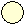
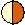
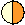

6 Assumptions and robustness
The three chapters in this part address questions we group under the heading of ‘Performance’:
- What is assumed in the analysis and how robust are the estimates? This chapter
- Is there empirical evidence that the methods work? Chapter 7
- How should studies be designed? Chapter 8
The SECR probability models of Chapter 3 that underlie the methods in this book incorporate certain assumptions. The validity and reliability of the methods therefore depend to an extent on how well the field data meet the assumptions. We list these before assessing their impact in practice - the topic of robustness.
| Assumption 1. | The population is closed (no animals die, emigrate or recruit during sampling). |
| Assumption 2. | Individuals are identified without error. |
| Assumption 3. | The probability of detecting an animal at a particular detector declines radially from a fixed point, its activity centre (AC). |
| Assumption 4. | The probability of detection is constant across individuals, detectors and times, conditional on the AC. |
| Assumption 5. | Detections of different individuals are independent, as are sequential detections of a single individual. |
We omit one further assumption: that the probability of detection declines to zero for AC at the edge of the habitat mask unless it is naturally bounded. This is addressed in the analysis by correct choice of detection function and buffer or mask (Chapter 12).
Restrictive assumptions often may be relaxed under specific extensions to the SECR model, including the various ‘sub-models’ of Chapter 10.
6.1 Robustness
For assumptions that cannot be met by better design or customized modelling, we rely on the robustness of SECR estimators. A robust estimator gives estimates that are close to the truth even when assumptions have been breached. We care most about estimates of population density, which may be robust even when estimates of other parameters are not.
Our main criterion will be the relative bias of an estimator, abbreviated RB and defined for an estimator \hat \theta of any arbitrary parameter \theta as \mathrm{RB}(\hat \theta) = \frac{\mathrm{E} (\hat \theta - \theta)}{\theta}. Robustness is estimated in practice by obtaining \hat \theta for a large sample of simulated datasets. Simulation allows the statistician to control precisely any deviation from the assumptions. There have now been several simulation studies that we review below. We supplement these with new simulations that we outline below and describe in full in the GitHub repo MurrayEfford/secr-simulations.
Breaches of assumptions may also impair estimates of sampling variance, leading to poor coverage of confidence intervals even when an estimator is unbiased. ‘Poor coverage’ here means that the true value lies outside the computed confidence interval more often (or sometimes less often) than expected by chance given the nominal level (e.g. 95%). Coverage of simulated intervals is therefore a further criterion.
Simulations cannot span the full range of scenarios, so the results are only indicative. Ideally we would supplement simulations with field validations of the method, but as we see in Chapter 7 these are difficult to execute and interpret.
Another approach is to test whether a particular dataset is consistent with each assumption. This was popular in the past (Otis et al., 1978), but has lost ground along with the declining credibility of null hypothesis testing, the growth of modelling frameworks, and reliance on the inherent robustness of the spatial methods.
Our simulations use a base scenario of sampling with a square grid of 64 binary proximity detectors operated for 10 occasions; detector spacing is 2\sigma for a hazard half-normal detection function with \lambda_0 = 0.1. A population with density 0.5\sigma^{-2} is distributed uniformly at random in a region extending 4\sigma beyond the detectors. We report relative bias of density estimates and detection parameters under a null model – one with uniform density and no additional effects on detection – except where stated. The range |RB| < 10% is shaded on the graphs, and bars indicate 95% confidence limits, although these are often obscured by the plotted points. Off-scale values are flagged with an asterisk (*).
Assumption 1: Population closed
Births, deaths and dispersal result in population turnover. Over an extended period of turnover, more animals may be observed than were present at any instant, and density estimates will be biased upwards. Studies using automatic cameras often accumulate data slowly over many days, and study duration has triggered much angst (e.g., Harihar et al., 2017). How much does a little turnover matter? Conversely, How long can the sampling period be? Results for non-spatial models (Kendall, 1999) cannot be transferred. We distinguish turnover due to movement of AC from in situ births and deaths, and consider it separately under Assumption 3d.
Dupont et al. (2019) investigated the effect of increasing study duration on the precision and bias of population size estimates. Their results are complicated by an artifact that caused their Bayesian estimator to be positively biased for short durations (Dupont et al., 2019, p. 669).
Additional simulations are shown in Fig. 6.1. Turnover in a constant population resulted in positive bias equal to about 70% of the mortality over the duration of the sampling. Thus 50% annual mortality (~16% over 3 months) resulted in about +11% relative bias in a 3-month study, and coverage of nominal 95% confidence intervals dropped to about 82%. The new results are broadly consistent with those from the more complex scenarios of Dupont et al. (2019) for ‘slow’ and ‘intermediate’ life histories.
{kind=link}
Assumption 1b: Population closed to immigration and emigration
This overlaps with Assumption 3 and is covered later.
Assumption 2: Identification without error
We can generally assume accurate identification on recapture of animals trapped and marked by conventional methods such as numbered leg bands or ear tags. However, identification may be unreliable with modern methods for passive sampling using natural marks (DNA from hair or faecal samples, and images from motion-sensitive cameras). This is a major limitation.
In genetic sampling there are two possible reasons for mis-identification: (i) there is too little variation at the chosen loci to distinguish all individuals in the sampled population, and (ii) genotyping is subject to error. Mills et al. (2000), Lukacs & Burnham (2005), Waits & Paetkau (2005), and Lampa et al. (2013) reviewed the early literature, and citations of those reviews are a good entry point to the voluminous recent literature. Sethi et al. (2014) provide technical advice. Augustine et al. (2020) provide a useful summary and a model framework that encompasses the various errors. Kodi et al. (2024) is a recent SECR study.
Natural marks such as coat patterns are prone to identification problems that parallel those from genotyping: individuals may not be distinguishable or some may be mis-recorded, leading to spurious ‘ghost’ individuals. The robustness of estimates will depend on the likely magnitude of each effect. We address the bias for varying frequencies of each effect below, with particular reference to genotyping.
A single camera may photograph only the left or right flank of a passing animal. Owing to the asymmetry of patterns, identity cannot be inferred conclusively from a single photograph. This identification problem can be addressed in the field by using paired cameras, so that both flanks are recorded (Karanth & Nichols, 1998). There may still be a minority of single-sided photographs, and probabilistic models have been suggested to incorporate these (Augustine et al., 2018).
Assumption 2a. Natural marks sufficiently diverse
The ability to distinguish individuals is measured by the probability of identity (PI). This is the probability that two individuals drawn at random from the population will appear the same, i.e. have the same genotype at the loci examined. Identity of genotypes was considered by Mills et al. (2000) to cause a “shadow effect”, as the existence of some individuals is concealed. The problem for SECR is even greater than in non-spatial capture–recapture. A group of two or more indistinguishable individuals becomes a ‘super individual’ whose detections spread over a larger area than each occupies individually.
Simulations in Fig. 6.2 and Fig. 6.3 illustrate the potential impact of shadow effects on SECR estimates. In a scenario with about 110 detected individuals, PI = 10^{-3} resulted in relative bias of -20\% in density estimates. This is largely due to the inflated spatial footprint of each super individual, which causes positive bias in estimates of the spatial scale of detection \sigma.
{kind=link}
{kind=link}
{kind=link}
Assumption 2b. Natural marks not corrupted
DNA samples degrade over time exposed to heat, moisture and UV light (e.g., Woodruff et al., 2014). This results in both a lower rate of successful DNA amplification, and increasing frequency of genotyping errors. A key genotyping error is the phenomenon of allelic dropout, when one allele at a heterozygous locus fails to amplify, resulting in an apparent homozygote. False alleles may also appear in the laboratory and give the appearance of a distinct genotype and individual. Either error is likely to result in a spurious ‘ghost’ individual that is never recaptured.
We measure the ghost effect by the probability a detection results in a ‘ghost’ individual. Unlike shadow effects, ghost individuals have almost no effect on \hat \sigma. However, they do cause negative bias in \hat \lambda_0 and a reciprocal (positive) bias in density estimates \hat D (Fig. 6.5). More extensive simulations were published by Kodi et al. (2024).
{kind=link}
Given sufficient diversity at the chosen loci, culling of inadequate samples and intensive checking of doubtful genotypes is generally sufficient to ensure adequate data (Paetkau, 2003). Lukacs & Burnham (2005) raised doubts about possible biases due to sample culling, but these have not been confirmed. Elimination of poor samples for which identity is uncertain tends to reduce sample size and precision. Precision can be improved by judiciously including samples with fewer loci in models that allow for uncertain identity (Augustine et al., 2020).
Unknown identity can be handled in SECR-like probability models. These generally lack power unless supplemented by detections of known individuals or telemetry (references in Appendix G). Bias due to ghost individuals may be reduced in some circumstances by modelling only detection histories with more than one detection (Kodi et al., 2024).
Assumption 3: Detection declines radially from randomly located, fixed AC
The spatial component of spatially explicit capture–recapture rests on quite specific spatial models for the population (a 2-D distribution of activity centres AC) and for detection (a declining function of distance from the AC). These follow from a biological model in which detection hazard is proportional to each animal’s utilisation distribution i.e., its home range conceived as a stationary 2-dimensional probability density function (van Winkle, 1975).
Assumption 3a: AC locations independent
The SECR model of Borchers & Efford (2008) treats activity centres as distributed independently according to an inhomogeneous Poisson point process. This allows local density to vary according to habitat or other persistent effects. It does not allow for the spacing behaviour of the animals themselves, which can lead to either contagion or repulsion of AC. Several authors have ventured into this area (Bischof et al., 2020; Efford & Fletcher, 2024; López-Bao et al., 2018; McLaughlin & Bar, 2020; Reich & Gardner, 2014; Russell et al., 2012). The general conclusion is that point estimates of density from SECR are robust to clustering of AC due to social behaviour, but the implied overdispersion leads to confidence limits that are too narrow. Non-independence of detection is a distinct issue (Assumption 4).
Assumption 3b: Home ranges circular
Concerns were expressed by Ivan et al. (2013) about the effect of non-circularity of home ranges. Simulations by Efford (2019) generally defused those concerns, with an important caveat: estimates of the spatial scale of detection \sigma and density are unreliable when elongated home ranges are sampled with a linear array of detectors. Simulations of randomly oriented elliptical ranges with an aspect ratio of 3:1 resulted in bias on the order of +13% for a linear array (Efford, 2019: Fig. 2). Bias is extreme (often >50%, Efford, 2019: Table 1) when home ranges are both elongated and have a common alignment to the array (Fig. 6.6 c). Modelling the anisotropy can be beneficial when the alignment is predictable from the landscape (Efford, 2019; Murphy et al., 2016; Murphy & Luja, 2025) and the array is not exactly linear, but the method is not universally applicable.
{kind=link}
Assumption 3c: Locations independent within home range
It is entirely likely that animals use their home ranges in a nested fashion (i.e., activity during any sub-interval localised in part of the range) or that some AC move during sampling. This may be viewed as a subset of Assumption 5 because if AC are not fixed during sampling then successive locations of an individual will be autocorrelated.
Royle et al. (2015) modelled movement patterns they called “transience” (a Gaussian random walk) and “dispersal” (discrete shift of AC). They concluded
… while estimators of density are extremely robust, even to pathological levels of movement (e.g., complete transience), the estimator of the spatial scale parameter of the encounter probability model is confounded with the dispersal/transience scale parameter.
We extend their simulations by considering a model in which the overall home range is stationary but locations within the home range are autocorrelated. The bivariate Ornstein-Uhlenbeck (OU) distribution is a convenient model with these properties (Dunn & Gipson, 1977; Hooten et al., 2017; D. S. Johnson et al., 2008). The home range as a whole is bivariate normal; we simulate the uncorrelated, circular case with equal variance on both axes. R code and details of the simulations are provided on GitHub.
Fig. 6.7 illustrates OU movement tracks for individuals with increasing autocorrelation parameter \tau. Detection is assumed here to happen when an individual is within some small threshold distance \epsilon of a detector at the end of a time step. Other detection models are possible.
{kind=link}
One consequence of autocorrelated movement is that the overall spatial scale increases with the duration and decreases with autocorrelation. With respect to telemetry, Otis & White (1999) concluded that autocorrelation per se did not bias inference so long as summary statistics were not generalized beyond the temporal sampling frame:
Sampling designs that predefine a time frame of interest, and that generate representative samples of an animal’s movement during this time frame, should not be affected by length of the sampling interval and autocorrelation.
The analogy with SECR is close: we are concerned with unbiased estimation of the detection parameters \lambda_0, \sigma that describe the detection process over the time frame of sampling. Extrapolation to other time frames would require knowledge of the correlation structure of the data, expressed in a model such as the bivariate Ornstein-Uhlenbeck distribution (e.g., Dunn & Gipson, 1977; Hooten et al., 2017), but that is not relevant to inference for the chosen time frame.
{kind=link}
Fig. 6.8 confirms the robustness of SECR null-model density estimates to serial correlation of location over a broad range of values (0 \le \tau \le 50). Bias is apparent in estimates of the global \sigma, as expected from the reduced extent of movements in a given time frame. Note here that autocorrelation induces negative bias in \hat \sigma. There is no direct analogue of \lambda_0 in the OU generating model, so we cannot determine the bias in \hat \lambda_0.
Assumption 3d. Home ranges stationary
Robustness of SECR to movement of home ranges (dispersal) was demonstrated by Royle et al. (2015). Harihar et al. (2017) expressed a further concern that movement over a long sampling duration would breach Assumption 1 (closure).
We simulated detections over 100 ‘days’ during which each AC underwent a random walk governed by a Gaussian kernel with scale \sigma_m. Details are given [elsewhere].
{kind=link}
Assumption 4: Probability of detection constant
Otis et al. (1978) classified non-spatial capture–recapture models according to three possible sources of variation in detection probability: time (t – sampling occasion), behaviour (b – learned response to capture) and heterogeneity (h – persistent individual differences). Models may accommodate any one of these sources (t, b, h) or their combinations (tb, th, bh, tbh). Space adds other sources of variation – most simply, detection probability may also vary between detectors (d) – and more complex potential interactions.
For SECR we have at least two parameters that control detection (g_0 or \lambda_0, and \sigma).
Detection parameters may also be considered a function of AC location, but for (relative) simplicity we stick to t, b, h, and d.
4a. Temporal variation
Sollmann (2024) reached the conclusion from simulations that temporal variation in the baseline detection probability g_0 may safely be ignored when fitting SECR models. Density estimates from null and temporal models are usually the same or nearly so.
Further simulations confirm the lack of bias in \hat D, but show that temporal variation in \sigma causes significant bias in estimates of both \lambda_0 and \sigma under the null model (Fig. 6.10).
{kind=link}
4b. Behavioural responses
We introduced behavioural responses in Chapter 10. Behavioural responses may also be treated as a breach of the assumption of serial independence, but we keep them here for consistency with the non-spatial literature.
The discovery of a detector and experience of capture may result in either a positive (trap-happy) or negative (trap-shy) change in detection probability. The response may persist for the duration of sampling or be transient (Markovian) and apply only at the next sampling occasion. In SECR there is the further complication that the response may be general, applying across all detectors, or localised to the initial detector.
Each of these responses is readily modelled if the sequence of detections is known. This is generally not the case with proximity detectors, for which an animal may visit multiple detectors on one sampling occasion. We therefore restrict consideration of learned responses to trapping data (single-catch and multi-catch traps). This is not a great loss, as proximity detectors are typically non-invasive and less likely than traps to affect behaviour.
If a behavioural response is not modelled then it may cause a heavy bias in density estimates, positive for trap shyness and negative for trap happiness (Fig. 6.11). In simulations we describe the magnitude of the behavioural response by a ‘recapture factor’ by which the initial (naive) hazard is multiplied after first capture. We simulated recapture factors between 0.25 and 2.0, where 1.0 represents no behavioural response. The bias is much reduced if the effect is detector-specific, but then \hat \sigma is also biased. For the scenario used in these simulations, the relative bias of density estimates fell between -10% and +10% for recapture factors between 0.5 and 2. In Chapter 10 we estimated a much larger response by deermice (about 10-fold, but with poor precision), although there was only a small difference in estimated density between the null and bk models. Behavioural responses are potentially important for SECR and deserve closer investigation.
{kind=link}
Note
Animals may encounter a detector without being detected. For example, a camera flash may be triggered when an animal is out of frame, or a trap door may fall without a clean capture. If such events cause avoidance then the behavioural response leaves no trace in the histories of detected animals and cannot be fully modelled. We would nevertheless expect some evidence for the aversive effect within detected histories.
4c. Individual heterogeneity
Individual heterogeneity has long been the bane of capture–recapture. Some of the variation is due to proximity to detectors, and does not bias SECR estimates because it is included in the model. A modest level of additional variation has little effect on null-model estimates: Efford & Mowat (2014) found that the relative bias of \hat D did not exceed -0.05 when \mathrm{CV}(a_0) < 0.3 for a_0 = 2\pi\lambda_0\sigma^2 (based on hazard halfnormal or exponential detection function). We confirmed this in simulations that varied each of the components \lambda_0 and \sigma^2 separately (Fig. 6.12). Biologically we expect an inverse relationship between \lambda_0 and \sigma^2, so in general \mathrm{CV}(a_0) will be less than either \mathrm{CV}(\lambda_0) or \mathrm{CV}(\sigma^2) on its own (Efford & Mowat, 2014).
Despite these appeals to robustness, Fig. 6.12 indicates a risk of significant bias in estimates of both density and detection parameters when individual heterogeneity is large.
{kind=link}
4d. Homogeneity across detectors
Spatial (detector-specific) variation in detection parameters is conceptually linked to individual heterogeneity. The location of each individual determines its detection probability via a particular set of AC-to-detector distances, as modelled automatically in SECR. Variation among detectors in efficiency (\lambda_{0_k}) adds between-animal heterogeneity because the detectors near a particular AC differ in efficiency from the average (Fig. 6.13), and the variation is not modelled automatically.
{kind=link}
The individual heterogeneity induced by between-detector variation is increased by spatial autocorrelation on the scale of home ranges, because this makes it more likely that all detectors in the neighborhood of an AC will be above average or below average. Variable \lambda_{0_k} may also affect null-model estimates indirectly owing to bias in \hat \sigma and perhaps \hat \lambda_0, but these interactions are poorly understood and we do not consider them further.
A Gaussian random field (GRF) is a convenient source of random spatial variation. Spatial structure of a GRF is controlled by its covariance function, which is typically exponential with a single scale parameter. Several authors have used a GRF to generate detector-specific variation in detection probability on the link scale (logit or cloglog). Reported bias in null-model density estimates from these simulations was typically in the range 0 to 20% Dey et al. (2023).
Detector-level variation has several possible origins –
- Habitat-determined variation in detector efficiency,
- Selective use of habitats (third-order selection of D. H. Johnson (1980)), or
- Unrecorded variation in sampling intensity (Dey et al., 2023).
Selective use implies a modification to each animal’s utilisation distribution. Time spent in preferred habitats allows less time in other habitats, and the time spent near any detector depends on the mix of habitats in the neighbourhood. Thus (1) and (2) imply different models of detector-level variation that we characterise as ‘unnormalised’ and ‘normalised’ (Efford, 2014).
We illustrate the effect of (1) and (2) with the scenarios simulated by Royle et al. (2013) and Efford (2014). The spatial scale parameter of the exponential covariance function was fixed at 2.5\sigma, the spacing of a 7 x 7 grid of binary proximity detectors.
The original model specified the hazard of detection as \lambda_k(\mathbf x) = \exp(\alpha_0 -\alpha_1 d^2 + \alpha_2 X_k), \tag{6.1} where d is the distance between an AC at \mathbf x and detector k and X_k is a spatially autocorrelated variable with marginal distribution N(0,1), evaluated at detector k. The first two parameters are transformed versions of the parameters of the secr hazard-halfnormal detection function (\alpha_0 = \log(\lambda_0), \alpha_1 = 1/(2\sigma^2); Chapter 10). The magnitude of detector-level variation was controlled by parameter \alpha_2.
Bias in density estimates was small (\mathrm{RB}(\hat D) < 5\%)) for \alpha_2 <0.5, but could become worrying for large \alpha_2 (Fig. 6.14 a). But what value of \alpha_2 is realistic? Royle et al. (2013) estimated \alpha_2 = 0.2 for black bear data from DNA hair snares, or \alpha_2 = -0.3 for a combined hair-snare and telemetry model.
{kind=link}
Normalisation, as implied by third-order habitat selection, attenuates the effect on the bias of density estimates (Fig. 6.14 b). We note also that detector-level covariate effects measured at each detector are readily included in the model; estimates are then nearly unbiased (e.g., Efford, 2014).
Large bias can arise when the sample is assumed to come from a detector array larger than that actually sampled (Dey et al., 2023; Moqanaki et al., 2021). This would seem to come under the heading data requirements rather than model robustness.
Further complexity is possible. Stevenson et al. (2021) suggested modelling a latent Gaussian random field for each individual and showed how the parameters of the GRF could be estimated, assuming these to be shared across individuals. It is unclear how the latent GRF should be interpreted biologically. Activity is not normalised, so the combination of detection function and latent GRF does not describe a utilisation distribution.
Assumption 5: Independence
5a. Individuals are detected independently
Animals that move in groups are unlikely to be detected independently. Bischof et al. (2020) labelled the phenomenon “cohesion”. The primary result is overdispersion and underestimation of the sampling variance. Confidence intervals will be too narrow, resulting in less-than-nominal coverage. Earlier optimism (Bischof et al., 2020) that a measure of overdispersion would correct for the underestimation appears to be unwarranted (Efford & Fletcher, 2024).
McLaughlin & Bar (2020) modelled random associations between adjacent neighbours; the method has yet to find general application.
Animals are not detected independently in single-catch traps. Maximizing the multi-catch likelihood provides unbiased estimates of density and spatial scale in most cases (see Distiller & Borchers (2015) for an exception), but estimates of the intercept of the detection function (g_0, \lambda_0) may be strongly biased. The coverage of confidence intervals based on the multi-catch likelihood has yet to be assessed. An algorithm combining simulation and inverse prediction allows unbiased estimation of all parameters (Efford, 2004, 2023), but lacks the flexibility of MLE.
5b. Detections of an individual are independent
Trapping by definition causes non-independence of detection events: an animal that is captured cannot be caught anywhere else until released. The non-independence of detections in multi-catch traps is readily modelled as competing risk, as we saw in Chapter 3.
A more problematic form of dependence arises when a single visit to a passive detector results in multiple observations. This can happen when DNA is amplified from multiple hair samples left at a hair snag, or when a camera takes multiple photographs of an animal on a single visit. Analysing such data as if they were independent events results in overdispersion and accompanying underestimation of sampling variance. A simple solution is to collapse counts to binary observations.
In the basic SECR model of Chapter 3 the next detection of an individual may happen anywhere in its home range, regardless of where it was last detected. More biologically realistic patterns of movement lead to sequential dependence of locations.
6.2 Summary
Most breaches of assumption can be managed to have only minor effects on density estimates, as we summarise in Table 6.1. Simulations only tell part of the story: to evaluate robustness we also need to know the real-life magnitude of any breach. The magnitude of some breaches may be assessed from external evidence (e.g. telemetry), or from a more general model that incorporates the effect (e.g., finite mixtures for individual heterogeneity; spatial random effect models Dey et al. (2023)). More work is needed on particular sampling systems and species.
Special care is needed when these effects may apply:
- mis-identification leads to the appearance of super individuals (the shadow effect)
- a learned (behavioural) response is global rather than specific to detector locations
- large individual heterogeneity
- alignment of home ranges with detector array
We have not considered in detail the potential for correlated variation in overall detection (a) and density. This was advanced as a major issue by McLellan et al. (2023).
Several breaches lead to underestimation of sampling variance and impaired coverage of confidence intervals. If the magnitude of the breach can be estimated then better confidence intervals may be achieved by simulating from the full model.
Particular detection parameters may be estimated poorly even when density estimates are robust. A common example arises when a multi-catch model is used for single-catch data: the estimated intercept of the detection function is strongly biased while density estimates are generally unbiased.
| Breach of assumption | Effect | Mitigating models | |
|---|---|---|---|
| 1. Closure | |||
| 1a. Births and deaths | RB(\hat D) proportional turnover | open population | |
| 1b. Dispersal |  | open population | |
| 2. Identification | |||
| 2a. Inadequate marks | -ve RB(\hat D) when high probability of identity | Augustine et al. (2020) | |
| 2b. Marks corrupted | |||
| 3. Home range HR | |||
| 3a. AC not independent | |||
| 3b. HR non-circular |  | severe RB(\hat D) when HR align with detectors | anisotropic model |
| 3c. Location autocorrelated | |||
| 3d. HR non-stationary | |||
| 4. Constant parameters | |||
| 4a. Temporal variation | covariate, time-specific | ||
| 4b. Behavioural responses |  |
learned response | |
| 4c. Individual heterogeneity | RB(\hat D) nonlinear on CV(a) | covariate, finite mixture | |
| 4d. Detector heterogeneity |  | covariate, GRF | |
| 5. Independence | |||
| 5a. Individuals interact | Efford (2023) | ||
| 5b. Serial dependence |
{kind=link}
{kind=link}
{kind=link}
{kind=link}
{kind=link}
| Legend | ignorable | minor | major | severe |